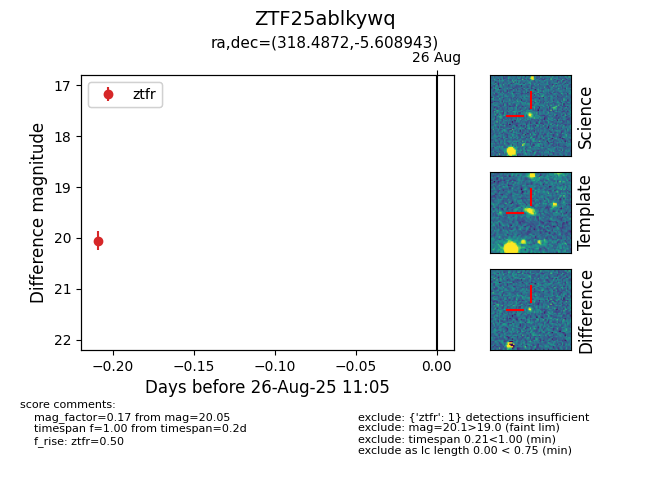

Target ZTF25ablkywq at 2025-08-26 11:05, see:
FINK: fink-portal.org/ZTF25ablkywq
Lasair: lasair-ztf.lsst.ac.uk/objects/ZTF25ablkywq
ALeRCE: alerce.online/object/ZTF25ablkywq
alt names
ZTF25ablkywq (ztf,fink)
coordinates:
equatorial (ra, dec) = (318.4872,-5.60894)
galactic (l, b) = (45.2985,-34.09155)
photometry
last ztfr=20.05
1 ztfr detections
